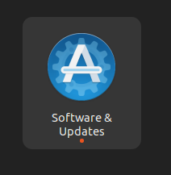

大数据实验踩坑指南_No.5——R语言和软件包的安装
大数据实验踩坑指南_No.5——R语言和软件包的安装
安装R
安装R的步骤可以在CRAN[1]上查看，这里不赘述
安装依赖
由于在Ubuntu上不支持通过二进制包进行安装R包，需要安装r-base-dev软件包来编译R包
1 | sudo apt-get install r-base-dev |
安装完成后，为了后续能顺利安装好所需的R包，首先需要用apt安装以下一些依赖
- libcurl4-openssl-dev：用于网络请求。
- libxml2-dev：用于处理XML数据。
- libssl-dev：SSL/TLS支持。
- libncurses5-dev：用于文本用户界面。
- libbz2-dev：bzip2压缩支持。
- libreadline-dev：用于读取和编辑命令行输入。
- libsqlite3-dev：SQLite数据库支持。
- libpng-dev：PNG图像支持。
- libjpeg-dev：JPEG图像支持。
- libtiff-dev：TIFF图像支持。
- libpango1.0-dev：文本布局和渲染。
- libharfbuzz-dev：文本形状化。
- libfreetype6-dev：TrueType字体支持。
- liblcms2-dev：色彩管理。
- libpangoft2-dev：Pango和FreeType的接口。
- libudunits2-dev：用于处理单位的库。
- libmysqlclient-dev：MySQL交互支持。
- libmysqlclient21：为MySQL提供运行时支持。
1 | sudo apt-get install libcurl4-openssl-dev libxml2-dev libssl-dev \ |
有些包名包含了版本号，可能随着时间推移，包名会发生改变，可以通过
apt search命令搜索正确的包名
如果由于网络原因安装失败，尝试通过
Software & Updates修改软件源
由于在Ubuntu上不支持通过二进制包进行安装R包，需要安装以下一些工具
- build-essential：Ubuntu的基础编译工具集，包含了dpkg-dev、g++、gcc、libc6-dev（或libc-dev）、make
- make：用于构建过程
- autoconf、automake、libtool：用于生成和维护自动化的Makefile。
- texinfo：用于创建和维护Texinfo格式文档。
- pkg-config：用于查询库的位置和编译选项。
- cmake：编译系统
这些工具可以通过以下命令安装：
1 | sudo apt-get install make autoconf automake libtool texinfo pkg-config build-essential cmake |
安装完成后，为了顺利下载，需要把软件源换为国内的镜像源，输入以下命令写入配置文件，设置hadoop用户的R镜像
1 | echo 'options(repos=c(USTC="https://mirrors.ustc.edu.cn/CRAN/"))' >> ~/.Rprofile |
在终端下运行以下命令启动R
1 | R |
可以执行下面的命令退出R：
1 | > q() |
安装R包
启动R进入R命令提示符状态，执行以下命令安装所需要的R软件包
其中的
c()表示一个向量，install.packages()函数会下载向量里的元素对应的软件包，如果下载单个软件包，可以执行install.packages("package_name")普通用户下载R包会下载到用户家目录下的R目录内，第一次下载会创建目录
$HOME/R/x86_64-pc-linux-gnu-library/4.4dependencies选项让R安装软件包时，把它们所依赖的包也安装上
repos选项如果上面已经配置了，这里可以省略
1 | > install.packages(c('RMySQL','devtools','ggplot2'),repos = c(USTC="https://mirrors.ustc.edu.cn/CRAN/")) |
等待编译安装完成
如果安装失败，尝试重新打开终端和R，重新执行安装命令
2
3
In install.packages(c("RMySQL", "devtools", "ggplot2"), repos = c(USTC = "https://mirrors.ustc.edu.cn/CRAN/")) :
installation of package ‘RMySQL’ had non-zero exit status如果出现以上错误，多重复尝试几次安装命令，并确保上面的依赖安装完全
最后在R命令提示符下，再执行如下命令安装taiyun/recharts
1 | > devtools::install_github('taiyun/recharts') |